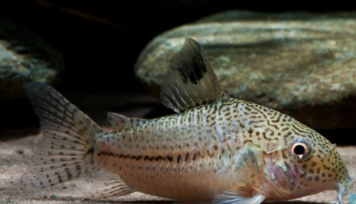

Systématique
- Ordre : Siluriformes
- Famille : Callichthyidae
- Genre : Corydoras
- Espèce : C. julii

Corydoras julii, souvent appelé Corydoras léopard, est une espèce très populaire mais paradoxalement très rare. En effet, 95% des poissons vendus sous ce nom dans le commerce sont en réalité des Corydoras trilineatus (le "Faux Julii").
Il mesure environ 4 à 5 cm. La différence principale réside dans le motif de la tête : chez le vrai C. julii, la tête est couverte de petits points fins et distincts (pointillés), alors que chez C. trilineatus, les points se rejoignent pour former un motif réticulé (comme un labyrinthe).
C'est un poisson de fond cuirassé, blanc argenté avec une ligne latérale noire en zigzag et des taches sur tout le corps. Comme les autres Corydoras, il fouille le sol à l'aide de ses barbillons.
C'est un poisson grégaire qui ne s'épanouit qu'en groupe. Il faut maintenir un banc d'au moins 6 à 8 individus.
Extrêmement pacifique, il passe ses journées à explorer le substrat à la recherche de nourriture. Il est vital de lui fournir un sol en sable fin (type sable de Loire) pour éviter l'érosion de ses barbillons sensibles. Un sol coupant (quartz concassé) peut entraîner des infections mortelles.
Mode : ovipare.
La reproduction est similaire à celle des autres Corydoras (position en "T"). La femelle colle ses œufs adhésifs sur les vitres de l'aquarium ou dans la végétation dense (mousse de Java).
Elle est souvent déclenchée par un changement d'eau important avec une eau plus fraîche et plus douce, simulant la saison des pluies.
Dimorphisme sexuel : Les femelles adultes sont nettement plus larges et plus rondes que les mâles lorsqu'elles sont observées par le dessus. Les mâles restent plus sveltes.
Espérance de vie : Environ 5 à 8 ans.
Le véritable Corydoras julii est endémique du Brésil, spécifiquement dans le bassin inférieur de l'Amazone et les rivières côtières de l'état du Piauí (Rio Parnaíba), ce qui explique sa rareté dans les importations comparé au trilineatus qui a une aire de répartition bien plus vaste (Pérou, Colombie, Brésil).
Répartition

Origine naturelle :
- Amérique du Sud.
- Brésil (Endémique du nord-est).
- Bassin du Rio Parnaíba.
Paramètres de maintenance
Température : 23 à 26 °C.
pH : 6,0 à 7,5.
GH : 5 à 15 °dGH.
Substrat : Sable fin non coupant OBLIGATOIRE.
Volume conseillé : Minimum 80 L pour un groupe, avec une surface au sol maximisée.
Régime alimentaire
Régime : omnivore / insectivore benthique.
Il fouille le sable pour trouver des micro-organismes.
En aquarium, il nécessite une alimentation spécifique coulant au fond : pastilles pour poissons de fond, et surtout de la nourriture vivante ou congelée (vers de vase, tubifex) pour varier son régime.